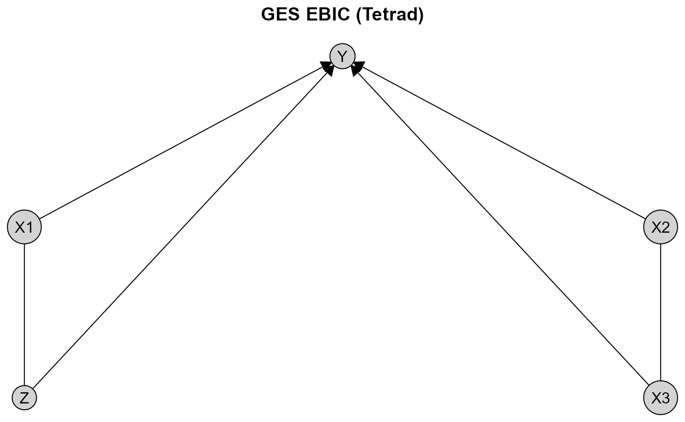

library(causalDisco)
#> causalDisco startup:
#> Java heap size requested: 2 GB
#> Tetrad version: 7.6.10
#> Java successfully initialized with 2 GB.
#> To change heap size, set options(java.heap.size = 'Ng') or Sys.setenv(JAVA_HEAP_SIZE = 'Ng') *before* loading.
#> Restart R to apply changes.This vignette provides an overview of the causalDisco package, which offers tools for causal discovery from observational data. It covers the main features of the package, including various causal discovery algorithms, knowledge incorporation, and result visualization.
Running causal discovery algorithms
We will for this section use the num_data dataset included in the package for demonstrating how to run causal discovery algorithms. It contains 5 numerical variables, X1, X2, X3, Z, and Y.
data(num_data)
head(num_data)
#> X1 X2 X3 Z Y
#> 1 3.900715 7.048325 6.964806 10.272479 15.35505
#> 2 4.736112 6.236746 5.666022 10.357262 23.36749
#> 3 4.657992 12.169805 9.127046 9.138338 25.32495
#> 4 5.176469 6.392344 6.101088 10.808335 26.75643
#> 5 4.535538 10.305236 7.465185 10.612735 22.67612
#> 6 4.885914 10.018856 7.413312 9.375931 28.03132To make the different causal graphs easier to interpret, we define a custom fixed layout for plotting the results:
plot_layout <- data.frame(
name = c("Z", "X3", "X1", "X2", "Y"),
x = c(0.00, 0.50, 0.00, 0.50, 0.25),
y = c(0.0, 0.0, 0.5, 0.5, 1.0)
)To run a causal discovery algorithm, we first define the algorithm using the corresponding function, and then pass it to the disco() function along with the data. Below we demonstrate this process using the Peter-Clark (PC) algorithm from bnlearn with Fisher’s Z test:
We can visualize the results using plot():
plot(pc_result_bnlearn, layout = plot_layout, main = "PC Fisher Z (bnlearn)")
The first notable feature of this plot is that some edges are directed, while others are undirected. For example, the edge from X1 to Y is directed, indicating a causal effect of X1 on Y. In contrast, the edge between X1 and X3 is undirected, indicating that the data alone do not provide sufficient information to determine the causal direction. Both orientations X1 %-->% X3 and X3 %-->% X1 are compatible with the observed conditional independencies.
To view all engines available for a specific algorithm, you can see the documentation using ?pc, where all options are listed under the engine argument. Instead of using bnlearn, we can also use the PC implementation from the pcalg package with the same test:
pc_pcalg <- pc(
engine = "pcalg", # Use the pcalg implementation
test = "fisher_z", # Use Fisher's Z test for conditional independence
alpha = 0.05 # Significance level for the test
)
pc_result_pcalg <- disco(data = num_data, method = pc_pcalg)
plot(pc_result_pcalg, layout = plot_layout, main = "PC Fisher Z (pcalg)")
We see that the results using the PC algorithm implemented in bnlearn and pcalg gives the same output on this dataset.
You can also use a different algorithm altogether, such as the GES algorithm. It follows the same pattern, however GES is a score-based algorithm, so instead of a test and an alpha level, we need to specify a score. Below we will use the Extended Bayesian Information Criterion (EBIC) score from Tetrad.
Tetrad Setup Instructions
causalDisco provides an interface to the Java library Tetrad for causal discovery algorithms. To use algorithms from Tetrad you need to install a Java Development Kit (JDK) >= 21. We recommend Eclipse Temurin (OpenJDK), available at https://adoptium.net/en-GB/temurin/releases. When using the installer from the Temurin website, make sure to select the option to set the JAVA_HOME environment variable during installation, so rJava correctly detects the Java installation.
For a simpler setup, we recommend using the rJavaEnv package, which provides a convenient function to install Java and configure the environment automatically for rJava. You can install Java using the rJavaEnv::java_quick_install() function:
# Use the development version of rJavaEnv from GitHub
# pak::pak("e-kotov/rJavaEnv")
rJavaEnv::java_quick_install(version = 25, distribution = "Temurin")Once you have Java JDK set up correctly, the current supported version of Tetrad can then be installed by calling
To verify everything is set up correctly you can run verify_tetrad():
verify_tetrad()
#> $installed
#> [1] TRUE
#>
#> $version
#> [1] "7.6.10"
#>
#> $java_ok
#> [1] TRUE
#>
#> $java_version
#> [1] "25.0.2"
#>
#> $message
#> [1] "Tetrad version 7.6.10 is installed and ready to use."Now you should be able to use Tetrad as an engine for the GES algorithm as shown in the code chunk below.
if (verify_tetrad()$installed && verify_tetrad()$java_ok) {
ges_tetrad <- ges(
engine = "tetrad", # Use the Tetrad implementation
score = "ebic" # Use the EBIC score
)
ges_result_tetrad <- disco(data = num_data, method = ges_tetrad)
plot(ges_result_tetrad, layout = plot_layout, main = "GES EBIC (Tetrad)")
}
If you want to customize the plot appearance further, you can pass additional arguments to plot(). For example, to change the appearance of the nodes, you can use the node_style argument:
plot(
pc_result_bnlearn,
layout = plot_layout,
main = "Customized plot",
node_style = list(
fill = "lightblue", # Fill color
col = "darkblue", # Border color
lwd = 2, # Border width
padding = 4, # Text padding (mm)
size = 1.2 # Size multiplier
)
)
For more details on customizing plots and generating TikZ code for LaTeX documents, see the visualization vignette.
Instead of using plot(), another way to view and analyze the results is to use the print() or summary() functions:
print(pc_result_bnlearn)
#>
#> ── caugi graph ─────────────────────────────────────────────────────────────────
#> Graph class: PDAG
#>
#> ── Edges ──
#>
#> from edge to
#> <chr> <chr> <chr>
#> 1 X1 --> Y
#> 2 X1 --- Z
#> 3 X2 --- X3
#> 4 X2 --> Y
#> 5 X3 --> Y
#> 6 Z --> Y
#> ── Nodes ──
#> name
#> <chr>
#> 1 X1
#> 2 X2
#> 3 X3
#> 4 Z
#> 5 Y
#> ── Knowledge object ────────────────────────────────────────────────────────────
summary(pc_result_bnlearn)
#>
#> ── caugi graph summary ─────────────────────────────────────────────────────────
#> Graph class: PDAG
#> Nodes: 5
#> Edges: 6
#>
#> ── Knowledge summary ──
#>
#> Tiers: 0
#> Variables: 0
#> Required edges: 0
#> Forbidden edges: 0
#>
#> ── Variables per TierIncorporating knowledge
We will for this section use the dataset tpc_example, which contains variables, which are measured at three different life stages: childhood, youth, and old age.
data(tpc_example)
head(tpc_example)
#> child_x2 child_x1 youth_x4 youth_x3 oldage_x6 oldage_x5
#> 1 0 -0.7104066 -0.07355602 1 6.4984994 3.0740123
#> 2 0 0.2568837 -1.16865142 1 0.3254685 1.9726530
#> 3 0 -0.2466919 -0.63474826 1 4.1298927 1.9666697
#> 4 1 1.6524574 0.97115845 0 -7.9064009 -4.5160676
#> 5 0 -0.9516186 0.67069597 0 1.7089134 0.7903853
#> 6 1 1.9549723 -0.65054654 0 -6.9758928 -3.2107342Since we know the temporal ordering of the variables, we can incorporate this background knowledge into the causal discovery algorithm. Specifically, we know that variables measured in childhood cannot be caused by variables measured in youth or old age, and variables measured in youth cannot be caused by variables measured in old age.
Knowledge is encoded by creating a Knowledge object via the knowledge() function. The first argument (optional, but recommended for name matching) specifies the dataset. Tiered knowledge can then be defined using the tier() function. Here, we illustrate this by creating a tiered knowledge structure based on life stages:
For more details on how to define knowledge, see the knowledge vignette.
You can view the Knowledge object using print(), summary() or plot():
print(kn)
#>
#> ── Knowledge object ────────────────────────────────────────────────────────────
#>
#> ── Tiers ──
#>
#> [1mtier[22m
#> <chr>
#> 1 child
#> 2 youth
#> 3 oldage
#> ── Variables ──
#> [1mvar[22m [1mtier[22m
#> <chr> <chr>
#> 1 child_x1 child
#> 2 child_x2 child
#> 3 youth_x3 youth
#> 4 youth_x4 youth
#> 5 oldage_x5 oldage
#> 6 oldage_x6 oldage
summary(kn)
#> ── Knowledge summary ──
#> Tiers: 3
#> Variables: 6
#> Required edges: 0
#> Forbidden edges: 0
#>
#> ── Variables per Tier
#> child: 2 variables
#> oldage: 2 variables
#> youth: 2 variables
plot(kn, main = "Temporal Knowledge")
The plot displays vertical tiers, each enclosed in a shaded rectangle and labeled with the corresponding tier name at the top.
We can then incorporate this knowledge into any algorithm like above. To do so, you need to pass the Knowledge object as an argument to the disco() function. Here we use the Temporal Peter-Clark (tpc) algorithm from causalDisco with the regression-based information loss test:
Similarly, we can view the results using print(), summary() or plot():
print(tpc_result)
#>
#> ── caugi graph ─────────────────────────────────────────────────────────────────
#> Graph class: PDAG
#>
#> ── Edges ──
#>
#> from edge to
#> <chr> <chr> <chr>
#> 1 child_x1 --- child_x2
#> 2 child_x2 --> oldage_x5
#> 3 child_x2 --> youth_x4
#> 4 oldage_x5 --> oldage_x6
#> 5 youth_x3 --> oldage_x5
#> 6 youth_x4 --> oldage_x6
#> ── Nodes ──
#> name
#> <chr>
#> 1 child_x2
#> 2 child_x1
#> 3 youth_x4
#> 4 youth_x3
#> 5 oldage_x6
#> 6 oldage_x5
#> ── Knowledge object ────────────────────────────────────────────────────────────
#> ── Tiers ──
#>
#> [1mtier[22m
#> <chr>
#> 1 child
#> 2 youth
#> 3 oldage
#> ── Variables ──
#> [1mvar[22m [1mtier[22m
#> <chr> <chr>
#> 1 child_x1 child
#> 2 child_x2 child
#> 3 youth_x3 youth
#> 4 youth_x4 youth
#> 5 oldage_x5 oldage
#> 6 oldage_x6 oldage
summary(tpc_result)
#> ── caugi graph summary ─────────────────────────────────────────────────────────
#> Graph class: PDAG
#> Nodes: 6
#> Edges: 6
#>
#> ── Knowledge summary ──
#>
#> Tiers: 3
#> Variables: 6
#> Required edges: 0
#> Forbidden edges: 0
#>
#> ── Variables per Tier
#> child: 2 variables
#> oldage: 2 variables
#> youth: 2 variables
plot(tpc_result, main = "TPC reg_test with Temporal Knowledge (causalDisco)")
Like before, the tiered knowledge is reflected in the plot layout, with variables grouped by life stage. Additionally, you can customize the plot appearance further by passing additional arguments to plot().
Next steps
For more information about how to incorporate knowledge, see the knowledge vignette.
For more information about causal discovery, see the causal discovery vignette.
For more information about visualization options, see the visualization vignette.